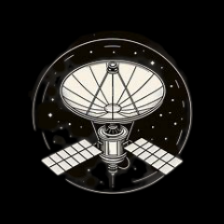
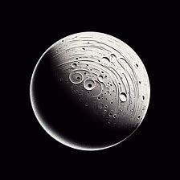

Sondes spatiales
Objectif de ce site
Sondes spatiales
Missions
Exploration de notre Système solaire
Liens intéressants
Mises à jour
Gestion du site

Sondes spatiales
Mais qu'est ce que c'est ?
A quoi ça sert
Les différents types de sondes spatiales
L'histoire des sondes spatiales

Exploration de notre Système solaire
Lune
Mercure
Venus
Mars
Jupiter
Saturne
Uranus
Neptune
Missions
Les différentes missions
les apports scientifiques des missions
La découverte d'objets célestes